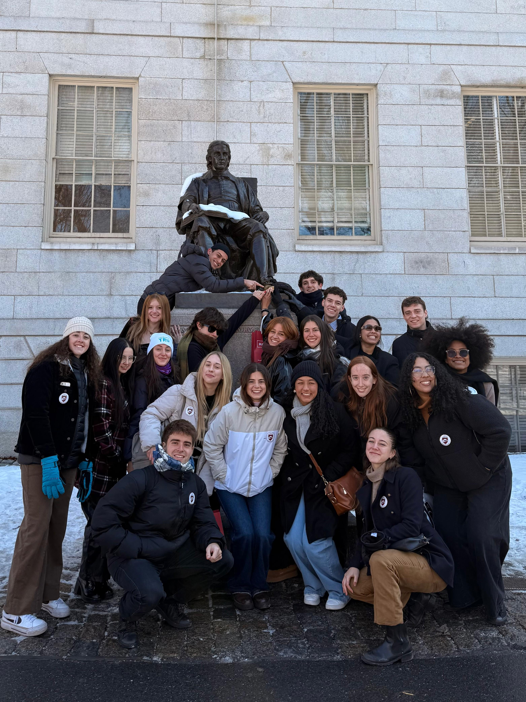

Harvard
Visita guiada al campus, historia, tradición y vida universitaria inspiradora.
Febrero 2026
En The Bridge, combinamos el aprendizaje del idioma con experiencias reales en dos de las ciudades más emblemáticas de Estados Unidos.
Durante dos semanas en Fisher College, Boston, los estudiantes participan en un curso intensivo de inglés con docentes nativos, clases dinámicas y actividades que fortalecen la comunicación y la confianza.
El programa continúa con un viaje educativo a Nueva York, donde el aprendizaje se traslada a museos, recorridos y visitas culturales.Entre historia, innovación y vida universitaria, los participantes descubren cómo el idioma se vive y se experimenta, en una propuesta que une educación, cultura y desarrollo personal en un entorno internacional.

En The Bridge Educational, el aprendizaje del idioma se centra en la comunicación real y el desarrollo integral de las cuatro habilidades: escuchar, hablar, leer y escribir.Las clases en Fisher College fomentan la participación activa, la confianza y la fluidez, integrando vocabulario, pronunciación y gramática en contextos auténticos.
Cada semana se aborda un tema diferente que conecta con la vida cotidiana, la cultura y los intereses de los estudiantes.
Además, se fortalecen competencias académicas y personales como la investigación, el trabajo en equipo y la presentación de ideas, promoviendo un aprendizaje dinámico, práctico y culturalmente enriquecedor en el corazón de Boston.
Visita guiada al campus, historia, tradición y vida universitaria inspiradora.
ciudad histórica y misteriosa, famosa por sus juicios de brujas.
Diversión, adrenalina y aventura en el parque más famoso.
Recorrido anfibio por tierra y agua con historia y diversión.